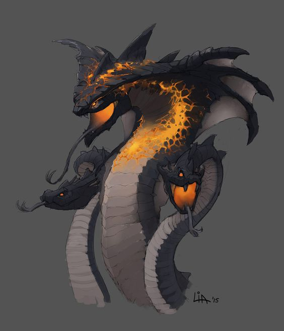
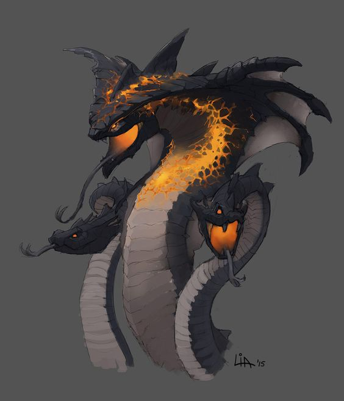

Serpiente Negra

La serpiente negra es la manifestacion fisica de la oscuridad, en el big-bang la oscuridad descubrio sus propios limites y tomo conciencia de si misma.
El unico deseo de la serpiente es volver aser todo lo que existe y olvidarse de su conciencia.
La luz del big-bang no solo hizo que la serpiente tomara forma, tambien la dejo ciega y la obligo a retirarse a los confines de el universo por miles de años.
despues de varios milenios la serpiente comenzo a destruir la luz en el universo pero fue entonces que se encontro con los 3 angeles.
La serpiente se efrento a los angeles con todo su poder pero se vio en desventaja, los angeles se dieron cuenta de que era imposible destruir del todo a la oscuridad asi que la encerraron en una prision llamada Kasedrim
Mientras estuvo encerrada la serpiente ideo un plan para escapar mientras los 2 angeles luchaban en el flujo de el tiempo contra su hermano caido
paso 1: aparecer frente al un poderoso primigenio y darle la daga
paso 2: la daga absorbe almas de demonios y se vuelve lo suficientemente poderosa como para liberar una pequeña parte de la serpiente temporalmente
Nombres
serpiente negra, la gran serpiente, el oscuro, la sombrasraza
desconocido


 
